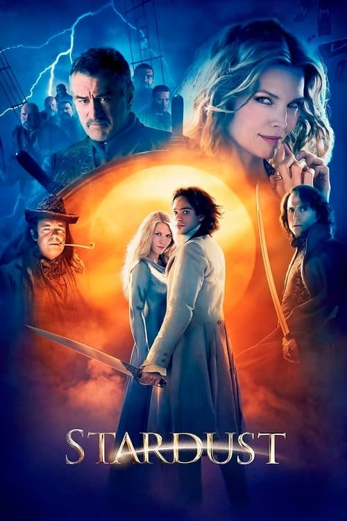

Stardust (2007)

Plataforma: Disney+
Puntuación IMDb: 7.0/10
Duración: 1h 57m
Género: Romance Fantástico
Sinopsis Rápida
Una estrella caída, un deseo prohibido y un viaje mágico te esperan en Stardust, una aventura épica donde el amor y la valentía desafiarán las leyes del universo.
Sinopsis Detallada
{{SINOPSIS_EXTENDIDA}}
¿Por qué tenés que verla?
- Una historia de amor épica y mágica que te dejará sin aliento.
- La química entre Claire Danes y Charlie Cox es electrizante, junto a un reparto de estrellas que brillan con luz propia.
- Stardust se ha convertido en un clásico de culto amado por su mezcla única de elementos fantásticos y su encantador tono.
- Una película visualmente impresionante que te transportará a un mundo mágico.
Idea Extra
Análisis de los personajes arquetípicos en Stardust y su comparación con la mitología clásica.